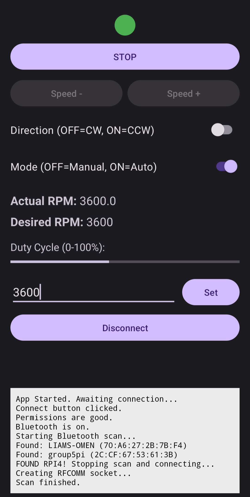

The Android Application

Key Features (Kotlin)
The app, written in Kotlin, handles all user interaction and data communication.
-
1
Stateful UI: The "START" button toggles to "STOP", and "Auto" mode disables the manual speed buttons, preventing user error.
-
2
Two-Way Data: A `sendCommand()` function sends string commands (e.g., `DIR_CW\n`), while a `startReadThread()` listens for and parses incoming RPM (`RPM:...`) and PWM (`PWM:...`) data.
-
3
Robust Connection: Includes a "Disconnect" button and an automatic-disconnect handler (in the read thread) that fully resets the UI to its initial state.
Final App Code
Show `MainActivity.kt` (Android App Final Code)
package com.group5.parmco
/* * --- IMPORTS EXPLAINED ---
* Android Manifest: To access permission constants (BLUETOOTH_CONNECT, etc.)
* Android Annotation: SuppressLint helps handle version-specific lint errors.
* Android Bluetooth: The core classes for Classic Bluetooth communication.
* - BluetoothAdapter: Represents the local Bluetooth radio.
* - BluetoothDevice: Represents the remote RPi4.
* - BluetoothSocket: The communication endpoint (like a TCP socket).
* Android Content: Context/Intent/BroadcastReceiver are for app components and messaging.
* Android View/Widget: Classes for the UI elements (Buttons, Text, Switches).
* AndroidX Activity/AppCompat: Libraries for modern, backward-compatible Activities.
* AndroidX Core: ContextCompat helps check permissions safely across Android versions.
* Java IO: Input/Output streams for sending bytes over the Bluetooth socket.
* Java Util: UUID is required to identify the SPP (Serial Port Profile) service.
*/
import android.Manifest
import android.annotation.SuppressLint
import android.bluetooth.BluetoothAdapter
import android.bluetooth.BluetoothDevice
import android.bluetooth.BluetoothManager
import android.bluetooth.BluetoothSocket
import android.content.BroadcastReceiver
import android.content.Context
import android.content.Intent
import android.content.IntentFilter
import android.content.pm.PackageManager
import android.os.Build
import android.os.Bundle
import android.util.Log
import android.view.View
import android.widget.Button
import android.widget.EditText
import android.widget.TextView
import androidx.activity.result.contract.ActivityResultContracts
import androidx.appcompat.app.AppCompatActivity
import androidx.core.content.ContextCompat
import com.google.android.material.switchmaterial.SwitchMaterial
import java.io.IOException
import java.io.InputStream
import java.io.OutputStream
import java.util.UUID
// Suppress "MissingPermission" because we manually check permissions before calling BT functions
@SuppressLint("MissingPermission")
class MainActivity : AppCompatActivity() {
private val tag = "MainActivity"
companion object {
private const val RPI_DEVICE_NAME = "group5pi"
// SPP (Serial Port Profile) UUID. This is the standard "Well Known" UUID
// for connecting to serial devices like the RPi RFCOMM server.
private const val SPP_UUID_STRING = "00001101-0000-1000-8000-00805F9B34FB"
}
// --- UI Elements ---
// lateinits are promises that we will initialize these variables in onCreate()
private lateinit var statusIndicator: View
private lateinit var statusText: TextView
private lateinit var connectButton: Button
private lateinit var connectGroup: View
// Motor Control UI
private lateinit var controlsGroup: View
private lateinit var buttonStartStop: Button
private lateinit var buttonSpeedDown: Button
private lateinit var buttonSpeedUp: Button
private lateinit var switchDirection: SwitchMaterial
private lateinit var switchMode: SwitchMaterial
private lateinit var textActualRpm: TextView
private lateinit var buttonDisconnect: Button
private lateinit var editDesiredRpm: EditText
private lateinit var buttonSetRpm: Button
private lateinit var textDesiredRpm: TextView
// --- Bluetooth Variables ---
private var bluetoothAdapter: BluetoothAdapter? = null
// Volatile ensures these variables are immediately visible to other threads
@Volatile private var parmcoSocket: BluetoothSocket? = null
private var parmcoDevice: BluetoothDevice? = null
private val sppUuid: UUID = UUID.fromString(SPP_UUID_STRING)
@Volatile private var outputStream: OutputStream? = null
private var readThread: Thread? = null
// --- State Tracking ---
@Volatile private var isMotorRunning = false
/*
* --- PERMISSIONS LOGIC ---
* Android 12 (API 31) introduced granular Bluetooth permissions.
* We must check the Android version (SDK_INT) to decide which permissions to ask for.
* >= API 31 (Android 12+): Needs SCAN and CONNECT permissions.
* < API 31 (Android 11-): Needs ACCESS_FINE_LOCATION (legacy way to find BT devices).
*/
private val bluetoothPermissions = if (Build.VERSION.SDK_INT >= Build.VERSION_CODES.S) {
arrayOf(
Manifest.permission.BLUETOOTH_SCAN,
Manifest.permission.BLUETOOTH_CONNECT,
Manifest.permission.ACCESS_FINE_LOCATION
)
} else {
arrayOf(
Manifest.permission.ACCESS_FINE_LOCATION
)
}
/*
* ActivityResultLauncher: The modern way to request permissions.
* Instead of 'startActivityForResult', we register a callback.
* This callback runs when the user clicks "Allow" or "Deny".
*/
private val requestPermissionLauncher =
registerForActivityResult(ActivityResultContracts.RequestMultiplePermissions()) { permissions ->
// Check if ALL requested permissions were granted
if (permissions.values.all { it }) {
logToScreen(getString(R.string.log_permissions_granted))
startConnectionProcess()
} else {
logToScreen(getString(R.string.log_error_permission_denied))
statusIndicator.setBackgroundResource(R.drawable.status_indicator_denied)
}
}
// Launcher to ask the system to turn on Bluetooth if it's currently disabled
private val requestEnableBluetoothLauncher =
registerForActivityResult(ActivityResultContracts.StartActivityForResult()) { result ->
if (result.resultCode == RESULT_OK) {
logToScreen(getString(R.string.log_bt_enabled))
startScan()
} else {
logToScreen(getString(R.string.log_error_bt_denied))
statusIndicator.setBackgroundResource(R.drawable.status_indicator_denied)
}
}
/*
* --- BROADCAST RECEIVER ---
* Bluetooth scanning is asynchronous. We start a scan, and the system sends
* "Broadcasts" whenever a device is found. This receiver listens for those events.
*/
private val scanReceiver = object : BroadcastReceiver() {
override fun onReceive(context: Context, intent: Intent) {
val action: String? = intent.action
// Event: A device was found
if (BluetoothDevice.ACTION_FOUND == action) {
// Get device object from the intent (handling API differences)
val device: BluetoothDevice? = if (Build.VERSION.SDK_INT >= Build.VERSION_CODES.TIRAMISU) {
intent.getParcelableExtra(BluetoothDevice.EXTRA_DEVICE, BluetoothDevice::class.java)
} else {
@Suppress("DEPRECATION")
intent.getParcelableExtra(BluetoothDevice.EXTRA_DEVICE)
}
device?.let {
val deviceName = it.name
val deviceAddress = it.address
if (deviceName != null) {
logToScreen(getString(R.string.log_found_device, deviceName, deviceAddress))
// CHECK: Is this our RPi?
if (deviceName.equals(RPI_DEVICE_NAME, ignoreCase = true)) {
logToScreen(getString(R.string.log_found_rpi))
bluetoothAdapter?.cancelDiscovery() // Stop scanning to save battery
parmcoDevice = it
connectToDevice() // Initiate connection
}
}
}
}
// Event: Scanning finished naturally (timeout)
else if (BluetoothAdapter.ACTION_DISCOVERY_FINISHED == action) {
logToScreen(getString(R.string.log_scan_finished))
if (parmcoDevice == null) {
logToScreen(getString(R.string.log_error_rpi_not_found, RPI_DEVICE_NAME))
statusIndicator.setBackgroundResource(R.drawable.status_indicator_disconnected)
}
}
}
}
// --- LIFECYCLE: onCreate ---
// Called when the app first starts.
override fun onCreate(savedInstanceState: Bundle?) {
super.onCreate(savedInstanceState)
setContentView(R.layout.activity_main)
// 1. Bind Kotlin variables to XML IDs
statusIndicator = findViewById(R.id.status_indicator)
statusText = findViewById(R.id.status_text)
connectButton = findViewById(R.id.connect_button)
connectGroup = findViewById(R.id.connect_group)
controlsGroup = findViewById(R.id.controls_group)
buttonStartStop = findViewById(R.id.button_start_stop)
buttonSpeedDown = findViewById(R.id.button_speed_down)
buttonSpeedUp = findViewById(R.id.button_speed_up)
switchDirection = findViewById(R.id.switch_direction)
switchMode = findViewById(R.id.switch_mode)
textActualRpm = findViewById(R.id.text_actual_rpm)
buttonDisconnect = findViewById(R.id.button_disconnect)
editDesiredRpm = findViewById(R.id.edit_desired_rpm)
buttonSetRpm = findViewById(R.id.button_set_rpm)
textDesiredRpm = findViewById(R.id.text_desired_rpm)
// 2. Set Initial State
statusText.text = getString(R.string.log_app_started)
controlsGroup.visibility = View.GONE
// 3. Initialize Bluetooth Adapter
val bluetoothManager = getSystemService(Context.BLUETOOTH_SERVICE) as BluetoothManager
bluetoothAdapter = bluetoothManager.adapter
if (bluetoothAdapter == null) {
logToScreen("FATAL: Bluetooth not supported on this device.\n")
connectButton.isEnabled = false
return
}
// 4. Set up UI Listeners
connectButton.setOnClickListener {
logToScreen(getString(R.string.log_connect_clicked))
parmcoDevice = null
checkPermissionsAndConnect()
}
buttonStartStop.setOnClickListener {
isMotorRunning = !isMotorRunning
buttonStartStop.text = if (isMotorRunning) "STOP" else "START"
sendCommand("START_STOP")
}
buttonSpeedUp.setOnClickListener {
sendCommand("SPEED_UP")
// Manual adjustment cancels auto mode
if (switchMode.isChecked) switchMode.isChecked = false
}
buttonSpeedDown.setOnClickListener {
sendCommand("SPEED_DOWN")
if (switchMode.isChecked) switchMode.isChecked = false
}
switchDirection.setOnCheckedChangeListener { _, isChecked ->
sendCommand(if (isChecked) "DIR_CCW" else "DIR_CW")
}
switchMode.setOnCheckedChangeListener { _, isChecked ->
if (isChecked) {
buttonSpeedUp.isEnabled = false
buttonSpeedDown.isEnabled = false
sendCommand("MODE_AUTO")
} else {
buttonSpeedUp.isEnabled = true
buttonSpeedDown.isEnabled = true
sendCommand("MODE_MANUAL")
}
}
buttonDisconnect.setOnClickListener { disconnect() }
// Set RPM Listener
buttonSetRpm.setOnClickListener {
val rpmString = editDesiredRpm.text.toString()
if (rpmString.isNotEmpty()) {
sendCommand("SET_RPM:$rpmString")
textDesiredRpm.text = rpmString
// Setting RPM implies Auto Mode
if (!switchMode.isChecked) switchMode.isChecked = true
} else {
logToScreen("Please enter a desired RPM.\n")
}
}
// 5. Register Receiver for Bluetooth Events
val filter = IntentFilter(BluetoothDevice.ACTION_FOUND)
filter.addAction(BluetoothAdapter.ACTION_DISCOVERY_FINISHED)
if (Build.VERSION.SDK_INT >= Build.VERSION_CODES.TIRAMISU) {
registerReceiver(scanReceiver, filter, RECEIVER_EXPORTED)
} else {
@Suppress("DEPRECATION")
registerReceiver(scanReceiver, filter)
}
}
override fun onDestroy() {
super.onDestroy()
unregisterReceiver(scanReceiver)
disconnect()
}
// Helper to update the text log on the screen
private fun logToScreen(message: String) {
statusText.append(message)
Log.d(tag, message) // Also log to Android Studio Logcat
}
// --- Permissions & Connection Flow ---
private fun checkPermissionsAndConnect() {
// Filter out permissions we already have
val permissionsToRequest = bluetoothPermissions.filter {
ContextCompat.checkSelfPermission(this, it) != PackageManager.PERMISSION_GRANTED
}
if (permissionsToRequest.isEmpty()) {
logToScreen(getString(R.string.log_permissions_good))
startConnectionProcess()
} else {
// Request missing permissions
val permsString = permissionsToRequest.joinToString()
logToScreen(getString(R.string.log_requesting_permissions, permsString))
requestPermissionLauncher.launch(permissionsToRequest.toTypedArray())
}
}
private fun startConnectionProcess() {
if (bluetoothAdapter?.isEnabled == false) {
logToScreen(getString(R.string.log_bt_off))
// Ask user to enable Bluetooth
val enableBtIntent = Intent(BluetoothAdapter.ACTION_REQUEST_ENABLE)
requestEnableBluetoothLauncher.launch(enableBtIntent)
} else {
logToScreen(getString(R.string.log_bt_on))
startScan()
}
}
private fun startScan() {
if (bluetoothAdapter?.isDiscovering == true) {
bluetoothAdapter?.cancelDiscovery()
}
logToScreen(getString(R.string.log_scan_starting))
statusIndicator.setBackgroundResource(R.drawable.status_indicator_connecting)
bluetoothAdapter?.startDiscovery() // Starts async scan process
}
// --- Sending Commands ---
private fun sendCommand(command: String) {
val outStream = outputStream
if (outStream == null) {
logToScreen("ERROR: Not connected. Cannot send command.\n")
return
}
// Network I/O cannot be done on the main thread, start a new thread.
Thread {
try {
outStream.write("$command\n".toByteArray())
// To update UI from a background thread, we must use runOnUiThread
runOnUiThread { logToScreen("Sent: $command\n") }
} catch (e: IOException) {
Log.e(tag, "Error sending command", e)
disconnect()
}
}.start()
}
// --- Disconnect Logic ---
private fun disconnect() {
if (parmcoSocket == null) return
val socket = parmcoSocket
val outStream = outputStream
parmcoSocket = null
outputStream = null
isMotorRunning = false
try {
readThread?.interrupt()
outStream?.close()
socket?.close()
} catch (e: IOException) {
Log.e(tag, "Error closing socket", e)
}
// Reset UI to "Disconnected" state
runOnUiThread {
logToScreen("Disconnected.\n")
statusIndicator.setBackgroundResource(R.drawable.status_indicator_denied)
controlsGroup.visibility = View.GONE
connectGroup.visibility = View.VISIBLE
buttonStartStop.text = "START"
textActualRpm.text = "--"
textDesiredRpm.text = "--"
switchMode.isChecked = false
buttonSpeedUp.isEnabled = true
buttonSpeedDown.isEnabled = true
}
}
// --- Reading Data Thread ---
// Continually listens for "RPM:XXX" messages from the RPi
private fun startReadThread() {
readThread = Thread {
val inputStream = parmcoSocket?.inputStream
try {
inputStream?.bufferedReader()?.use { reader ->
while (parmcoSocket != null && !Thread.currentThread().isInterrupted) {
val line = reader.readLine()
if (line == null) break // End of stream
if (line.startsWith("RPM:")) {
val rpmValue = line.substringAfter("RPM:").trim()
runOnUiThread {
textActualRpm.text = rpmValue
}
}
}
}
} catch (e: IOException) {
Log.w(tag, "Connection lost (read failed): ${e.message}")
}
disconnect()
}
readThread?.start()
}
// --- Connection Logic ---
private fun connectToDevice() {
Thread {
try {
runOnUiThread {
logToScreen(getString(R.string.log_creating_socket))
}
// Use reflection or createRfcommSocketToServiceRecord to create socket
val method = parmcoDevice?.javaClass?.getMethod(
"createRfcommSocket",
Int::class.javaPrimitiveType
)
// Invoke the method to get a socket connected to Channel 1
parmcoSocket = method?.invoke(parmcoDevice, 1) as BluetoothSocket
// Blocking call - waits for connection
parmcoSocket?.connect()
outputStream = parmcoSocket?.outputStream
startReadThread() // Start listening for data
runOnUiThread {
logToScreen(getString(R.string.log_connected_success))
statusIndicator.setBackgroundResource(R.drawable.status_indicator_connected)
controlsGroup.visibility = View.VISIBLE
connectGroup.visibility = View.GONE
}
} catch (e: Exception) {
val errorMsg = e.message ?: "Unknown Exception"
runOnUiThread {
logToScreen(getString(R.string.log_error_connection_failed, errorMsg))
statusIndicator.setBackgroundResource(R.drawable.status_indicator_denied)
}
try {
parmcoSocket?.close()
} catch (closeException: IOException) {
// Ignore errors on close
}
}
}.start()
}
}Show `activity_main.xml` (Android App Layout)
<?xml version="1.0" encoding="utf-8"?>
<androidx.constraintlayout.widget.ConstraintLayout
xmlns:android="http://schemas.android.com/apk/res/android"
xmlns:app="http://schemas.android.com/apk/res-auto"
xmlns:tools="http://schemas.android.com/tools"
android:layout_width="match_parent"
android:layout_height="match_parent"
tools:context=".MainActivity">
<!-- Status Indicator -->
<View
android:id="@+id/status_indicator"
android:layout_width="32dp"
android:layout_height="32dp"
android:layout_marginTop="24dp"
android:background="@drawable/status_indicator_disconnected"
app:layout_constraintEnd_toEndOf="parent"
app:layout_constraintStart_toStartOf="parent"
app:layout_constraintTop_toTopOf="parent" />
<!-- Guideline -->
<androidx.constraintlayout.widget.Guideline
android:id="@+id/horizontal_guideline"
android:layout_width="wrap_content"
android:layout_height="wrap_content"
android:orientation="horizontal"
app:layout_constraintGuide_percent="0.65" />
<!-- Connection Group -->
<androidx.constraintlayout.widget.ConstraintLayout
android:id="@+id/connect_group"
android:layout_width="0dp"
android:layout_height="wrap_content"
android:layout_marginStart="16dp"
android:layout_marginEnd="16dp"
app:layout_constraintBottom_toTopOf="@+id/horizontal_guideline"
app:layout_constraintEnd_toEndOf="parent"
app:layout_constraintStart_toStartOf="parent"
app:layout_constraintTop_toBottomOf="@+id/status_indicator"
app:layout_constraintVertical_bias="0.5">
<Button
android:id="@+id/connect_button"
android:layout_width="0dp"
android:layout_height="wrap_content"
android:text="@string/connect_button_text"
app:layout_constraintBottom_toBottomOf="parent"
app:layout_constraintEnd_toEndOf="parent"
app:layout_constraintStart_toStartOf="parent"
app:layout_constraintTop_toTopOf="parent" />
</androidx.constraintlayout.widget.ConstraintLayout>
<!-- Motor Controls Group -->
<androidx.constraintlayout.widget.ConstraintLayout
android:id="@+id/controls_group"
android:layout_width="0dp"
android:layout_height="0dp"
android:layout_marginStart="16dp"
android:layout_marginEnd="16dp"
android:layout_marginTop="8dp"
android:layout_marginBottom="8dp"
android:visibility="gone"
app:layout_constraintBottom_toTopOf="@+id/horizontal_guideline"
app:layout_constraintEnd_toEndOf="parent"
app:layout_constraintStart_toStartOf="parent"
app:layout_constraintTop_toBottomOf="@+id/status_indicator"
tools:visibility="visible">
<Button
android:id="@+id/button_start_stop"
android:layout_width="0dp"
android:layout_height="wrap_content"
android:text="START"
app:layout_constraintEnd_toEndOf="parent"
app:layout_constraintStart_toStartOf="parent"
app:layout_constraintTop_toTopOf="parent" />
<Button
android:id="@+id/button_speed_down"
android:layout_width="0dp"
android:layout_height="wrap_content"
android:layout_marginTop="8dp"
android:layout_marginEnd="4dp"
android:text="Speed -"
app:layout_constraintEnd_toStartOf="@+id/button_speed_up"
app:layout_constraintHorizontal_bias="0.5"
app:layout_constraintStart_toStartOf="parent"
app:layout_constraintTop_toBottomOf="@+id/button_start_stop" />
<Button
android:id="@+id/button_speed_up"
android:layout_width="0dp"
android:layout_height="wrap_content"
android:layout_marginStart="4dp"
android:text="Speed +"
app:layout_constraintEnd_toEndOf="parent"
app:layout_constraintHorizontal_bias="0.5"
app:layout_constraintStart_toEndOf="@+id/button_speed_down"
app:layout_constraintTop_toTopOf="@+id/button_speed_down" />
<com.google.android.material.switchmaterial.SwitchMaterial
android:id="@+id/switch_direction"
android:layout_width="0dp"
android:layout_height="wrap_content"
android:layout_marginTop="8dp"
android:text="Direction (OFF=CW, ON=CCW)"
android:textSize="16sp"
app:layout_constraintEnd_toEndOf="parent"
app:layout_constraintStart_toStartOf="parent"
app:layout_constraintTop_toBottomOf="@+id/button_speed_down" />
<com.google.android.material.switchmaterial.SwitchMaterial
android:id="@+id/switch_mode"
android:layout_width="0dp"
android:layout_height="wrap_content"
android:layout_marginTop="8dp"
android:text="Mode (OFF=Manual, ON=Auto)"
android:textSize="16sp"
app:layout_constraintEnd_toEndOf="parent"
app:layout_constraintStart_toStartOf="parent"
app:layout_constraintTop_toBottomOf="@+id/switch_direction" />
<TextView
android:id="@+id/label_actual_rpm"
android:layout_width="wrap_content"
android:layout_height="wrap_content"
android:layout_marginTop="16dp"
android:text="Actual RPM: "
android:textSize="18sp"
android:textStyle="bold"
app:layout_constraintStart_toStartOf="parent"
app:layout_constraintTop_toBottomOf="@+id/switch_mode" />
<TextView
android:id="@+id/text_actual_rpm"
android:layout_width="wrap_content"
android:layout_height="wrap_content"
android:text="--"
android:textSize="18sp"
app:layout_constraintBottom_toBottomOf="@+id/label_actual_rpm"
app:layout_constraintStart_toEndOf="@+id/label_actual_rpm"
app:layout_constraintTop_toTopOf="@+id/label_actual_rpm" />
<TextView
android:id="@+id/label_desired_rpm"
android:layout_width="wrap_content"
android:layout_height="wrap_content"
android:layout_marginTop="8dp"
android:text="Desired RPM: "
android:textSize="18sp"
android:textStyle="bold"
app:layout_constraintStart_toStartOf="parent"
app:layout_constraintTop_toBottomOf="@+id/label_actual_rpm" />
<TextView
android:id="@+id/text_desired_rpm"
android:layout_width="wrap_content"
android:layout_height="wrap_content"
android:text="--"
android:textSize="18sp"
app:layout_constraintBottom_toBottomOf="@+id/label_desired_rpm"
app:layout_constraintStart_toEndOf="@+id/label_desired_rpm"
app:layout_constraintTop_toTopOf="@+id/label_desired_rpm" />
<EditText
android:id="@+id/edit_desired_rpm"
android:layout_width="0dp"
android:layout_height="wrap_content"
android:layout_marginTop="8dp"
android:layout_marginEnd="8dp"
android:hint="Set Target RPM"
android:inputType="number"
app:layout_constraintEnd_toStartOf="@+id/button_set_rpm"
app:layout_constraintStart_toStartOf="parent"
app:layout_constraintTop_toBottomOf="@+id/label_desired_rpm" />
<Button
android:id="@+id/button_set_rpm"
android:layout_width="wrap_content"
android:layout_height="wrap_content"
android:text="Set"
app:layout_constraintBottom_toBottomOf="@+id/edit_desired_rpm"
app:layout_constraintEnd_toEndOf="parent"
app:layout_constraintTop_toTopOf="@+id/edit_desired_rpm" />
<Button
android:id="@+id/button_disconnect"
android:layout_width="0dp"
android:layout_height="wrap_content"
android:layout_marginTop="8dp"
android:text="@string/disconnect_button_text"
app:layout_constraintEnd_toEndOf="parent"
app:layout_constraintStart_toStartOf="parent"
app:layout_constraintTop_toBottomOf="@+id/edit_desired_rpm" />
</androidx.constraintlayout.widget.ConstraintLayout>
<ScrollView
android:id="@+id/log_scroller"
android:layout_width="0dp"
android:layout_height="0dp"
android:layout_margin="16dp"
android:background="#ECECEC"
android:padding="8dp"
app:layout_constraintBottom_toBottomOf="parent"
app:layout_constraintEnd_toEndOf="parent"
app:layout_constraintStart_toStartOf="parent"
app:layout_constraintTop_toBottomOf="@+id/horizontal_guideline">
<TextView
android:id="@+id/status_text"
android:layout_width="match_parent"
android:layout_height="wrap_content"
android:fontFamily="monospace"
android:textColor="#000000"
android:textSize="12sp"
tools:text="Log will appear here..." />
</ScrollView>
</androidx.constraintlayout.widget.ConstraintLayout>Show `AndroidManifest.xml` (App Permissions)
<?xml version="1.0" encoding="utf-8"?>
<manifest xmlns:android="http://schemas.android.com/apk/res/android"
xmlns:tools="http://schemas.android.com/tools"
package="com.group5.parmco">
<!--
--- BLUETOOTH PERMISSIONS ---
BLUETOOTH & BLUETOOTH_ADMIN: Legacy permissions (Pre-Android 12) to use BT.
BLUETOOTH_SCAN: (Android 12+) Required to discover devices.
neverForLocation asserts we aren't using BT to track user GPS.
BLUETOOTH_CONNECT: (Android 12+) Required to bond and communicate.
ACCESS_COARSE/FINE_LOCATION: Required for BT scanning on Android 11 and below
because BT beacons could theoretically reveal location.
-->
<uses-permission android:name="android.permission.BLUETOOTH"
android:maxSdkVersion="30" />
<uses-permission android:name="android.permission.BLUETOOTH_ADMIN"
android:maxSdkVersion="30" />
<uses-permission android:name="android.permission.BLUETOOTH_SCAN"
android:usesPermissionFlags="neverForLocation" />
<uses-permission android:name="android.permission.BLUETOOTH_CONNECT" />
<uses-permission android:name="android.permission.ACCESS_COARSE_LOCATION" />
<uses-permission android:name="android.permission.ACCESS_FINE_LOCATION" />
<!-- Tells the App Store that this app CANNOT run without Bluetooth hardware -->
<uses-feature android:name="android.hardware.bluetooth" android:required="true" />
<application
android:allowBackup="true"
android:dataExtractionRules="@xml/data_extraction_rules"
android:fullBackupContent="@xml/backup_rules"
android:icon="@mipmap/ic_launcher"
android:label="@string/app_name"
android:roundIcon="@mipmap/ic_launcher_round"
android:supportsRtl="true"
android:theme="@style/Theme.PARMCO"
tools:targetApi="31">
<!-- The Main Activity that launches when the icon is clicked -->
<activity
android:name=".MainActivity"
android:exported="true">
<intent-filter>
<action android:name="android.intent.action.MAIN" />
<category android:name="android.intent.category.LAUNCHER" />
</intent-filter>
</activity>
</application>
</manifest>